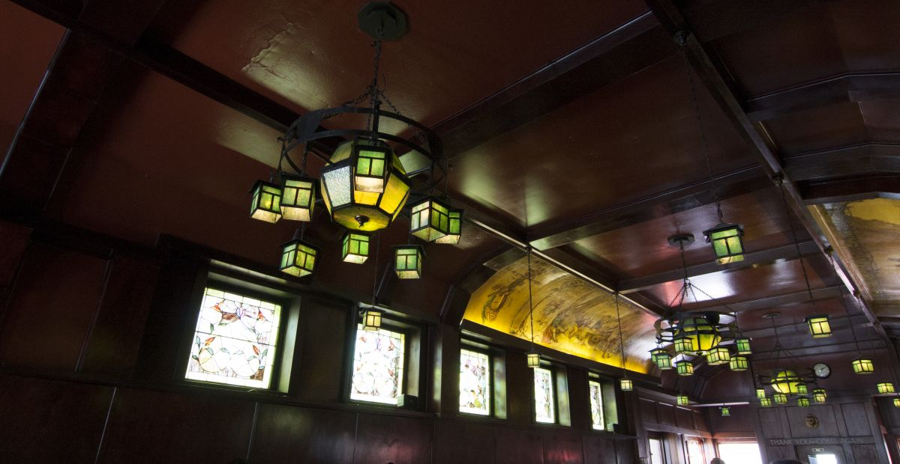

On January 1, 1965, the Ambassador Restaurant opened under new ownership. The new owners, the Rossi family, had transformed the space from a tap bar into a restaurant that specialized in pizza and sandwiches. In 1978, the Ambassador was expanded into the space next door, and the second dining room was added. In January 2007, the Ambassador became a non-smoking establishment. To explain the history of the Ambassador and the unique murals that line the interior walls, the owners conducted research and wrote a poem detailing the story. The poem, entitled “Come Fill a Bumper,” has since been printed on the cover of the Ambassador menu. (see below for full text)
The first line of the poem mentions “Mr. Rohrbeck,” who was “given a job to do.” Rohrbeck, the mural artist, was commissioned by Joseph Bosch (born in Baden, Germany in 1850) to paint the murals specifically for the Bosch brewery (closed in 1978). The murals were later placed in the “old Giltedge Bar.” Featuring gnomes in various states of celebration, the murals are oil on canvas, with several coats of varnish on top for preservation. The date that the paintings were sold to the Ambassador and transferred from the Bosch Brewery is unclear, but the transaction likely took place in the late 40s or early 50s during a remodeling project.
The Ambassador retains the original charm and tradition of its original inception; in addition to the murals, which have remained in place for over 50 years, the original pizza recipe is still used to create the Ambassador pizzas.
On or about nineteen hundred and two, Mr. Rohrbeck was given a job to do.
With brushes in hand and gnomes in his head, he created the masterpiece on the wall above.
First home for the paintings was the old Giltedge Bar, east of here, but not too far.
Streets were of dirt, sidewalks of wood, hitching posts for horses, business was good.
Beer for a nickel, whiskey for a dime, sandwiches a quarter any old time.
Prohibition was next, and became the law, the Ambassador, a speakeasy, called “Hole in the Wall”
Paintings were rolled and stored away, for twelve long years in the dust they lay.
At last came nineteen thirty-three, the law was repealed and Bacchus was free.
Saloons and taverns opened their doors, folks danced, sang, and drank spirits once more.
The old bar was hauled out of its storage place, and the paintings were hung on the walls they now grace.
The artist, long gone, would be proud if he knew, that folks still enjoy them as much as they do.